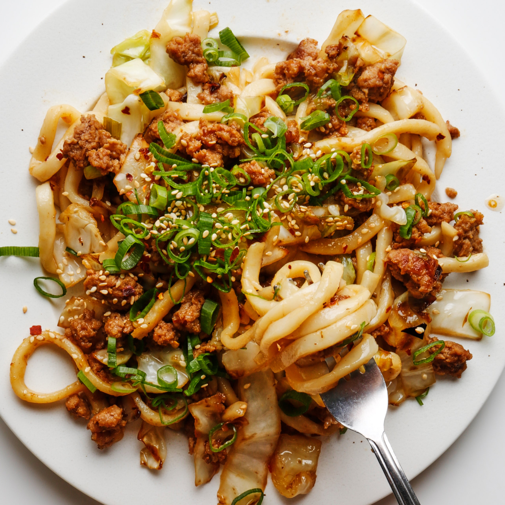

Chloe's Udon Stir Fry

My personal favorite out of Chef Cao's famous dishes. Main components include Udon
noodles, thin slices of Beef, Nappa Cabbage, as well as other vegetables and seasonings.
Ingredients(1 serving)
- Pack of Udon Noodles
- Shabu or Hot Pot Beef
- Nappa Cabbage
- Onion
- Minced garlic
- Your choice of seasonings
Cooking Directions
- Soften noodles in room temperature water
- Wash & prepare onions, cabbage, & garlic
- Sautee vegetables in pan with oil
- Place noodles and beef in pan
- Season noodles and beef while stirring
- Plate and enjoy!